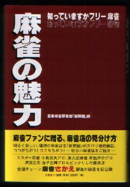

「麻雀の魅力」（文芸社\1000-）という本を買ってきた。著者は麻雀新撰組というグループ。といっても昔存在した麻雀新撰組とは関係ないだろうから、たぶんどこかの編プロか。
副題に「知っていますかフリー麻雀」、帯には全国チェーン麻雀さかえ躍進の秘密」なんてある。どうやらフリー麻雀荘の紹介というか、さかえチェーン店の広告のような本らしい。そう思って読み始めたら、ほんとにそうだった。(^^； とはいうものの、なかなか面白かった。

プロローグは、架空（たぶん、さかえチェーン店）のフリー雀荘体験記みたいな記事。ここでコワイ/アブナイ/キタナイ/クライという麻雀荘のイメージを払拭する。第１章でかる〜く麻雀の歴史など。
第２章でどこかのフリー雀荘のベテランオーナー（これもたぶんさかえ関係者？）とフリー雀荘談義。第３章でフリー雀荘の仕組みを解説、４章は都内有名フリー雀荘３店の訪問記、５章はまるまる、さかえオーナーとの麻雀店経営談義と、全編、サブタイトルにふさわしい内容となっている。
なかでも懐かしかったのが、第４章の都内有名フリー雀荘探訪記。水道橋のぴいちはもも、新宿のバビロン、飯田橋の東風荘の３店が紹介されている。もちろんどの店も行ったことはない。しかしぴいちはももとバビロンはとくに懐かしかった。
というのはぴいちはもものある場所は、いまからン10年前、毎日、うろついていた所。新宿のバビロンのある場所の方は、毎日とは云わないが、月一くらいでうろついていた。法政のある飯田橋にもよく行ったが、東風荘のある場所のほうへはあまり行かなかったな。
いずれにしたってこういう本が出るということは、フリー雀荘が社会的ジャンルとして確立している証左でもある。いや、愛好家の一員として大いに喜ばしい。
とはいうものの、σ(-_-)の住まいは、周りにフリー雀荘どころか麻雀荘そのものが無いという片田舎（一番近いセット雀荘で車で15分くらい）。世の中ではフリーを通り越してギャル雀大流行というのに、このギャップはどういうこっちゃ！。。。。(i＿i)
各章の最後に、「金言集」として戦術コラムが載っているが、一部でひどいミスプリがある。ま、戦術本じゃないからいいけど。。。
|